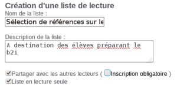

L'onglet "Mes listes de lecture"
Il est possible d'activer les listes de lecture. Ces dernières peuvent être modifiées ou non par les autres lecteurs selon le paramétrage. Il faut que la fonctionnalité de panier dans l'OPAC soit activée. Pour savoir comment les activer, consultez Paramétrer les listes de lectures
Les listes de lecture⚓
Cette fonctionnalité permet de sauvegarder le contenu d'un panier en sélection permanente, de partager des références avec d'autres lecteurs ou de constituer une liste de références à plusieurs.
Les différents types de liste :⚓
Il existe différents types de listes :
- les listes qui ne peuvent pas être partagées : le lecteur se les constitue pour lui
- les listes publiques, qui peuvent être vues de tous
- les listes accessibles après inscription auprès du créateur de la liste
Enfin, les listes peuvent être modifiés par les personnes qui y ont accès, ou non.
Présentation des fonctionnalités⚓
Afficher mes listes de lecture : permet au lecteur de voir et / ou supprimer toutes les listes qu'il a créé ainsi que gérer le partage de ces dernières.
Afficher les listes de lecture publiques : permet de voir toutes les listes publiques créées par tous les lecteurs, nécessitant, ou non, une inscription.
Afficher les demandes d'accès à mes listes : permet de voir les personnes souhaitant accéder aux listes avec inscription obligatoire que le lecteur a créées.
ProcédureCréer une liste de lecture, la diffuser et la modifier⚓
Se connecter à son compte-lecteur
Constituez un panier des références que vous souhaitez faire figurer dans la liste. Pour cela, recherchez les références dans l'OPAC puis ajoutez les au panier :
Transformer le panier en liste de lecture
Une fois le panier constitué, cliquez sur le lien de ce dernier

Puis sur les boutons permettant la transformation en liste de lecture :
Transformer le panier en liste de lecturepour mettre la totalité du panier dans la liste.Transformer les notices cochées en liste de lecturepour mettre seulement une partie des notices du panier dans la liste.Pour l'exemple nous choisirons de mettre la totalité du panier dans la liste.
Paramétrer la diffusion de la liste
Autres exemples de paramétrage
Liste privée à destination du lecteur uniquement :
Liste pouvant être vue par tous les lecteurs mais non modifiable : 
Etc...
Visualiser ses listes
Demander accès à une liste de lecture
Un lecteur B souhaite accéder à la liste "Sélection de références sur le thème de l'informatique" créée par le lecteur A dans les copies d'écran précédentes.
Via le bouton
Afficher les listes de lectures publiquesil peut voir toutes les listes de lecture publiques créées par tous les lecteurs. Il peut ainsi, au besoin, demander l'inscription aux listes qu'il souhaite. Il justifie sa demande avant de l' Envoyer.Sa demande est alors en attente de validation de la part du lecteur A :
Traiter une demande d'inscription à une liste de lecture
Le lecteur A prend connaissance du fait que le lecteur B a demandé un accès à sa liste via le bouton
Afficher les demandes d'accès à mes listes. Deux possibilités s'offrent à lui :-
Accepter les demandes d'accès cochéesafin que le lecteur B ait accès à sa liste.-
Refuser les demandes d'accès cochéesen précisant un motif de refus.
Ajouter un document à une liste de lecture existante